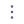

<section class="indicators">
  <div class="indicators__content">
    <div class="indicators__header">
      
      <h2 class="indicators__header_title">Показатели</h2>
      
    </div>
    <div class="indicators__parametrs">
      <h2 class="indicators__header_title parameters">Параметры</h2>
      <h2 class="indicators__header_title fact">Факт</h2>
      <h2 class="indicators__header_title model">Модель</h2>
    </div>
    <div class="indicators__block">
      <div *ngFor="let indicator of indicatorsData; let i = index">
        <div class="indicators__data">
          
          <h2 class="indicators__header_title indicators__block_text parameters" [class.open]="indicator.isOpen">{{indicator.name}}</h2>
          <h2 class="indicators__header_title indicators__block_text model">Отклонений:<span
            class="deviations__counter">{{indicator.deviations}}</span></h2>
        </div>
        <div *ngFor="let detailed of indicator.detailed">
          <div class="indicators__detailed indicators__data"
               [class.active]="indicator.isOpen"
               [ngClass]="{'danger-state': detailed.state ==='danger', 'selected-state': detailed.seleceted}"
               (click)="toogleSelectedDetatailed(detailed)">
            <h2 class="indicators__header_title detailed__name parameters">{{detailed.title}}</h2>
            <h2 class="indicators__header_title fact">Ед.изм.</h2>
            <h2 class="indicators__header_title fact detailed__number">{{detailed.fact}}</h2>
            <h2 class="indicators__header_title fact detailed__number">{{detailed.model}}</h2>
          </div>
        </div>
      </div>
    </div>
  </div>
</section>
